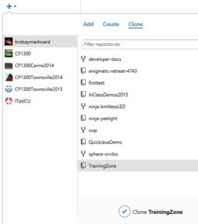

Practical - GitHub
Aim:
- To get set up for and practise using GitHub for version control and collaboration
GitHub:
Git (version control) and GitHub (Web interface/storage for git projects) are superb tools that you should be
using. In particular, they will be invaluable for your group work assignment.
If the GitHub client is not already on your computer, please install it from:
While you're waiting for it to install, get started on the rest:
- If you don't have one yet, please create a free account at https://github.com/
Imprtant! Use a recognisable name for your account, like jimmysmith, not js1995.
Your GitHub profile will become an important part of your resume! - Then please upgrade your account to a free student account at: https://education.github.com/discount_requests/new - this allows you to have private repositories for free... but your repository for the project must be public.
- Then, read the article on GitHub-assisted Web Development
- It might take a bit to get a hang of GitHub and how best to use it, so take some time to learn and practise...
- Online courses:
- SitePoint has this great introduction video course for GitHub
- Login to lynda.com via JCU's access portal, then watch the video course: GitHub for Web Designers
- Now create a repository (repo) for your Training Zone site online:
...
- Run the GitHub client program and enter your username and password in the Options
- Then you can clone this new repo to your desktop through the client interface
(or clicking on the "Clone In Desktop" on the website might work depending on how the client installed).
 - Now we can view this repo as a folder on the computer (the GitHub client shows changes and stuff, not just
files). Right-click on the repo name and choose to open in Explorer or Finder:
-
Important - what files to (not) commit
- Use your Git/GitHub repo as a snapshot of your website, not as a working directory of ALL your files.
- Store large files like uncompressed images, client documentation, etc. separately (in Google Drive, Dropbox or a different GitHub repo).
- When you pull/clone from your website repo, you don't usually need all of those files, and they will always be there in the history you have to copy, even after you delete them...
This means it may take a very long time to clone! - Your repo should be just the actual site you would publish.
- Now you can copy your Training Zone website files into this folder and they will show up as changes in the
client.
Add a brief summary and a "commit message" to describe the changes (you do this for every time you want to commit), and click "Commit to master". This commits/saves it locally.
- Then click the Sync button to upload (push) the files to GitHub.
- View the repo via the GitHub.com website now to see the changes.
Collaboration with GitHub
- Next we want to practise collaborating with others - as you will for your group project.
- Pair up with another person (if you're on your own or an online student, contact someone else in the subject online) and do this both ways - you will edit each other's files...
- Read how to add collaborators at GitHub's article here.
- Then do it... each of you add the other as a collaborator for your Training Zone site.
- Clone your partner's site,
make a noticeable modification,
then commit and push it back to the repo.
Make sure to use a meaningful commit message.
- Explore the online user interface to see how to view and edit code online, create issues (for discussion) and get familiar with all of this (it might take a while... so keep reading and practising).
- Create a wiki for your GitHub repo and make some initial comments there to see how it works. You can use
this to help with collaboration for your upcoming group project.
Learn more about GitHub wikis here.
GitHub Integration with PHPStorm
See the full documentation here
To open an existing GitHub project in PHPStorm:
- Select VCS > Import from Version Control > GitHub
- Enter your GitHub login and password - but you do not need to create a "master password"
- Copy and paste the URL of your GitHub repo, and select a new folder on your computer for the files, and
click Clone, e.g.:
- This will ask you to open it as your current project and you can edit your work.
Committing & Uploading (pushing) to GitHub
When you've done some good work, you should commit it (save to your local version control) and push it (upload to GitHub).
- Select VCS > Commit Changes (Ctrl+K)
This shows you all of your changed files and a bunch of options (most you don't need to be concerned with) - Enter a descriptive commit message and click "Commit and Push" (then "Push" on the next
window)

- You can check your project on the GitHub website to see that the upload has worked.
- If you're keen, take a look at the other options, such as uploading files to a Web server after the commit. Nice.
Assignment Checking:
Here are some quick things to check now:
Plan:
- Does your mission have a clear, measurable goal in the first sentence?
- Does the success evaluation quantifiably measure the mission you've listed?
- Is your target audience limited and specific, AND have you explained specifically (not generally) how you will target them in terms of design, not content?
- Does your flowchart show hierarchy (different levels)?
Is each page a box (no boxes for content that is not a separate page in your site)?
Is each line a link?
Site:
- Have you got ALL content provided by the client on the site?
- Have you tested EVERY link from EVERY page?
- Is your CSS in an external file?
- Have you got 'clean' HTML with no styling (e.g. no center elements or align attributes)?
- Are ALL of your images displayed at their actual size (e.g. if the image is 100 * 200, then the HTML is width="100 height="200")?
Re-read the rest of the marking rubric to make sure you haven't missed anything you could improve.